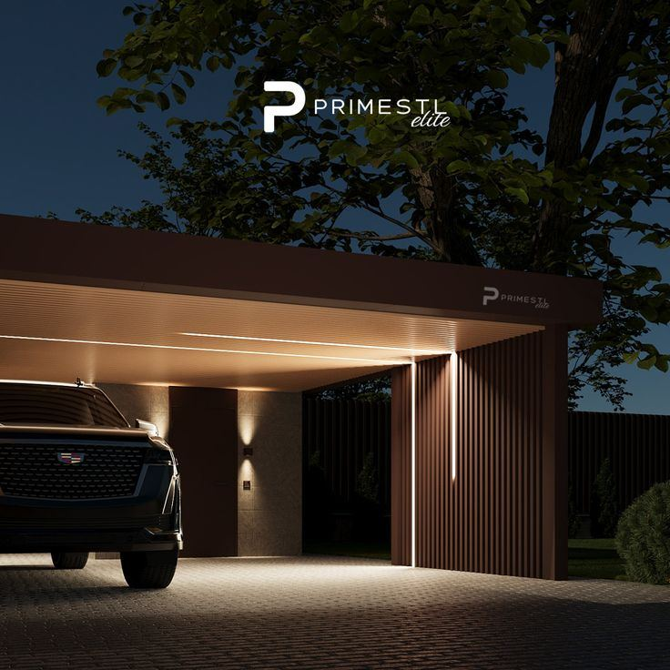

Chapter 02
콘텐츠 제작 가이드
사진·영상·글쓰기 전반에 적용되는 톤앤매너입니다. 기조는 블랙 앤 화이트, 절제된 라이팅, 자동차 자체의 디테일을 살리는 무드입니다.
01
무드 레퍼런스
어두운 배경 속에서 은은한 라인 조명이 차량의 실루엣과 디테일을 드러내는 방식의 촬영/편집 톤을 기준으로 삼습니다. 화려한 색보정보다 명암 대비와 질감으로 완성도를 표현합니다.

※ 첨부 이미지는 무드 레퍼런스이며, 실제 촬영 결과물이 아닙니다.
02
사진 톤앤매너
- 채도 — 저채도 또는 흑백 위주. 컬러 유지 시에도 채도를 낮춰 절제된 느낌 유지
- 명암 — 하이라이트와 그림자의 대비를 살려 입체감 표현
- 구도 — 여백을 충분히 남기고, 차량/피사체를 화면 중심 또는 3분할 구도에 배치
- 조명 — 과도한 플래시 지양, 자연광 또는 은은한 인공광 활용
03
영상 톤앤매너
- 안정적인 짐벌/거치 촬영 우선, 급격한 흔들림 지양
- 컷 전환은 리듬감 있게, 과도한 트랜지션 효과 자제
- 배경음악은 브랜드 톤에 맞는 절제된 무드의 트랙 사용
- 자막 폰트는 통일된 서체·컬러(블랙/화이트 계열) 사용
04
글쓰기 톤앤매너
권장
- 담백하고 정제된 문장
- 구체적인 경험과 디테일 중심 서술
- 존댓말 기반의 정중한 어조
지양
- 과도한 이모지·느낌표 남용
- 근거 없는 과장 표현
- 지나치게 캐주얼한 반말체
추후 업데이트 예정 — 기존 콘텐츠 제작 관련 자료가 있다면 반영하여 세부 규정을 보완하겠습니다.